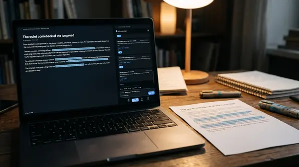
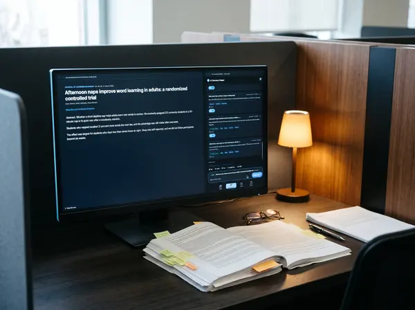

University students
University studentsUniversity students
For coursework and research: the summary beside the text, evidence passages, DOI citation and source comparison. The library stays on your own device.
Illustration, AI-generated
AI Summary Helper is a free, open-source extension for Chrome and Firefox. It summarizes web pages and papers and backs every answer with the passage it came from. You choose the model: your own key or a local one with Ollama, no account needed.
Open source · No account needed · Made in the EU · Your choice of model · Add to Chrome
Transcript · 0:18
Four pieces of evidence, the real interface and, at the end, the demo to try.

All of this is in the extension today.


Quotes that do not appear word for word in the text are dropped. A match shows that the passage is in the text, not that the model read it correctly. Reading the surrounding text stays part of the task.
Four lateral-reading questions accompany every source. They are hints for checking, not ratings.
Studies are recognised by their DOI and labelled as study, review or preprint. The citation comes from the DOI registry, not from the AI.
Collect several articles on one question, classify each source and compare the summaries: where do they agree, where not, what is missing?
Summaries in the language learners choose. The original text stays visible beside it.
The summary is read aloud while it is still being written, with pause, mute and speed.
A walk through an educational institution. Page through the rooms or jump around in the building.
University studentsFor coursework and research: the summary beside the text, evidence passages, DOI citation and source comparison. The library stays on your own device.
 Teaching support and libraries
Teaching support and librariesFor research training and courses: research mode, DOI citation and source comparison to demonstrate and practise.
 Teachers
TeachersShow in class how to check an AI answer against its source. The evidence passage makes checking concrete.
 School students
School studentsLearners check an answer at its evidence passage instead of taking it over. They need no account, and the institution decides which model is used.
 School leadership and IT
School leadership and ITA browser extension without server installation. The institution decides which model is used and where text goes. The source code is public.
The institution can run a model on its own computer or server (for example through Ollama or its own endpoint). Then the text never leaves the house.
Instead of a server in the house, the institution can run a model in a cloud it selects and controls itself. We advise on choice, operation and connecting it to the extension.
If the institution chooses an external provider, the text goes to that provider: with your own key straight from the browser, or via byphil Cloud and OpenRouter. What exactly flows where is in the table below.
The tool is free. If your institution would like support around it, we advise, remotely and on site in Germany.
Which model suits your institution, local or in the cloud, and what does that mean for computers and servers?
Choosing and connecting a cloud your institution controls itself or runs with a provider of your choice.
Plan a pilot, brief teachers, put together documents for your data protection officers. This does not replace legal advice or approvals.
On the left what exists today, to the right what is planned and not built yet. We give no date, and your wishes count for the order.
The pilot is free. We hand out seats by hand for now. Write us briefly who you are and what you want to use the tool for. The e-mail opens with a template for you to fill in.
No. The extension works without an account. You only need an account if you want to use byphil Cloud.
Only the text someone has summarized, and only to the AI provider the institution chose. With a local model everything stays on the device. The library is in the browser.
Yes, with a local model through Ollama. The computer needs enough power for the chosen model.
Your data protection officers have to assess that. That is why we state openly where data flows (see above), and the source code is public. We do not claim any approval by an authority.
The extension is free, and so is the pilot. With your own key or a local model there are no costs with us. Costs at the AI provider follow its prices.
Yes. The source code is public on GitHub.